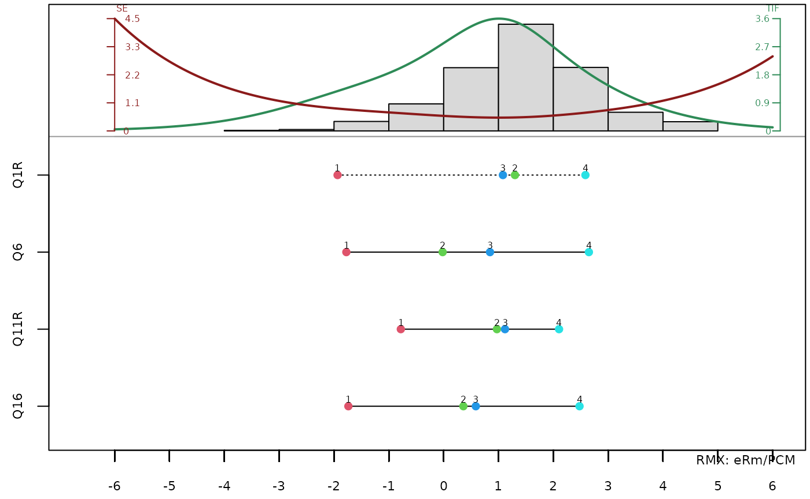

Data preparation
For our example we will use the included dataset big5. It’s simulated
after a students survey of the BIG 5 (Openness [O], Conscienciousness
[C], Extraversion [E], Agreeableness [A], and Neuroticism [N]). The
scale comprises 21 items following the structure of the BFIK. The items
were originally presented in German. See ?big5 for a
translation and more details.
Let’s have a look at the Extraversion scale first.
dat_extra = big5[, c(1, 6, 11, 16)]First, we must estimate a model, in this case the Partial Credit
Model. We will use the eRm-Package, however you could use
one of the other available packages as well.
res0 = PCM(dat_extra)That’s it, now we can use the plotPIccc-function to
display the model graphically in many different ways. First, let’s have
a look at the classical Person-Item Map, which can also be plotted by
using classical = TRUE.
plotPIccc(res0, classical = TRUE, extwin = FALSE)
One function and several items
By default, plotPIccc() draws the Category
Characteristic Curves (CCCs) for all items. Let’s have a look at the
standard functionality first:
plotPIccc(res0, extwin = FALSE)In this PIccc we find four areas of output: the top left segment shows the person parameter histogram. The green line is the test information function (TIF) and the red line the standard error (SE). The top right segment holds the legend. The lower right segment shows the category response frequency barcharts of each item. The lower left segment is the most important segment. It shows the item-related functions, in this case the CCCs.
The plot is highly customizable. For example, if you wish to just
show the person parameter histogram and the CCCs, you can do so by
setting funwprop = 1. Use 0 if you just want to show the
barplots on the right. In the same way, you can just show the CCCs and
barplots without the person parameters by using
funhprop = 1. You can also use values between 0 and 1 for
different proportions.
MEHR BEISPIELE UND DANN
One item and several functions
So far we have only looked at one of the two modi the
plotPIccc function offers: plotting one type of curve for a
set of items. In many cases however, a particular item merits a closer
examination. You can do so by simply setting the isel
argument to the desired item. Let’s look at item “Q6” and plot alle
possible function types.
In this modus the output looks slightly different than before. The upper left segment is still composed of the person parameter histogram as well as the TIF and SE. However, because only a subset of items was used, dashed lines indicate the TIF and SE of only the selected items. The lower left segment now shows the different functions for item “Q6”. The top right segment shows the barplot of this item, while the lower right segment displays the legends of the respective functions. Of course, every argument we used before can also be used in this modus.